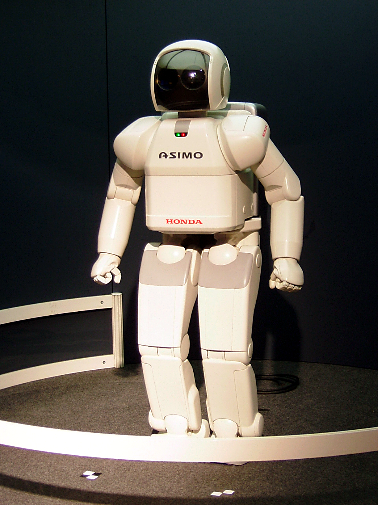

is a branch of computer science, and one of the basic pillars of the industry technology in the current era, and can be defined as the term artificial intelligence , who referred to him abbreviation (AI) - that the ability of machines and computers digital to perform certain tasks that mimic It is similar to that of intelligent beings; Such as the ability to think or learn from previous experiences or other processes that require mental processes, and artificial intelligence aims to reach systems that have intelligence and behave in the way that humans act in terms of learning and understanding, so that these systems provide their users with various services of education and guidance interaction and so on.Much of the literature defines artificial intelligence as: “the study and design of intelligent customers.” The intelligent customer is a system that understands its environment and takes positions that increase its chance of success in achieving its mission or team mission. This definition, in terms of goals, actions, perception, and environment is due to Russell & Norvig (2003) and other definitions also include knowledge and learning as additional criteria. Computer scientist John McCarthy originally coined the term in 1956 , and himself defined it as "the science and engineering of making intelligent machines". Andreas Kaplan and Michael Heinlein define artificial intelligence as “the ability of a system to correctly interpret external data, learn from that data, and use that knowledge to achieve specific goals and tasks through flexible adaptation.”
